大數據相關職缺分析專題 Part 2

員工的離職原因林林總總，只有兩點最真實：1 錢，沒給到位 2 心，委屈了
本篇主要講述自動化排程爬蟲程式和服務上雲，並產出視覺化分析讓求職者參考，此專題 Part 1 傳送門
專題目標 - 讓帶著一顆焦慮的心求職的我們都能順利轉職
透過此次大數據相關的職缺分析，更清晰我們在就業市場的定位，並能根據這半年在養成班的所學，優先精進某幾項核心競爭力，明確自己的求職目標
大型求職網站的職缺現狀為何？相關資力與薪資級距的關係？有數據人才需求的公司樣態？哪些技能或工具是多數公司的必備條件？
資料流程 - 蒐集 → 處理 → 儲存 → 調整 → 分析 → 視覺化
處理完資料缺漏、分類、離群值和統一格式後，匯入 pymysql 或 SQLAlchemy 模組並設定連線參數，將資料以 dataframe 形式寫入關聯式資料庫 MySQL
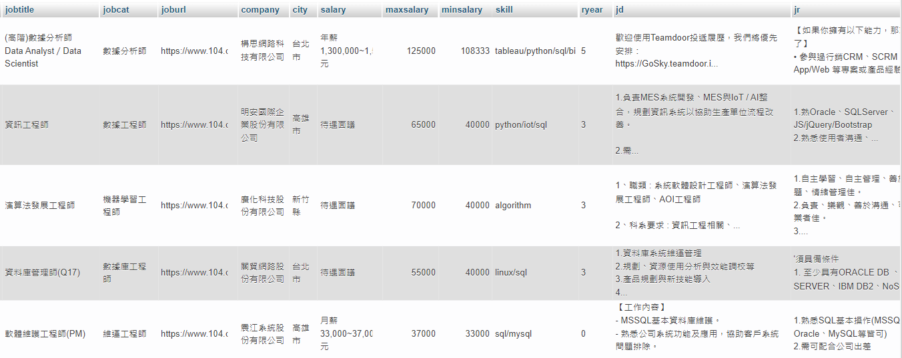
-
如何完成 Data Pipeline 自動化排程？
● Linux 系統由 cron 來控制例行性工作排程，本次專題則以 crontab 指令建立爬蟲程式排程，依據不同網站的更新頻率和職缺數量，排定不同更新週期
● 資料庫裡的職缺也需定期清理，若該職缺更新日期超過 30 天前，則設定 Event Scheduler 事件排程器執行刪除任務
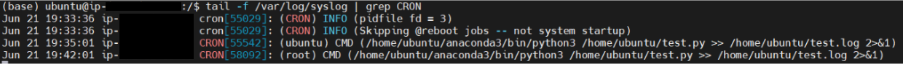
P.S. 設定完成後，可下指令即時監測 CRON 是否如期運作 tail -f /var/log/syslog | grep CRON
-
將服務佈署至雲端
於 AWS 雲端平台架設執行個體 EC2，本次作業系統選擇 Ubuntu
於雲端虛擬主機中安裝 Anaconda 編輯器執行 Python 命令
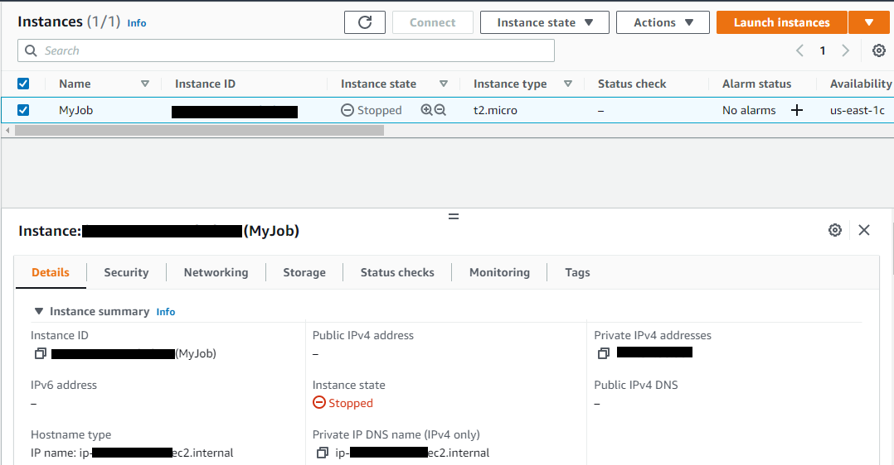
於 AWS 雲端平台使用資料庫服務 RDS，本次資料庫引擎選擇 MySQL
安裝 GUI 應用程式 MySQL-Workbench 以連線到雲端資料庫
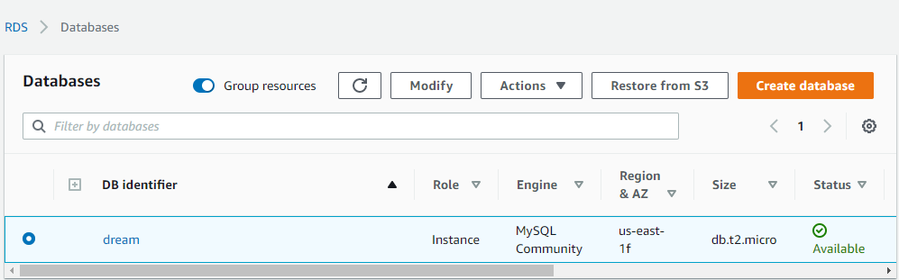
使用 Lambda 排程自動開啟/停止執行個體，以控制使用量節省成本
先建立 IAM 政策和執行角色，再編寫 Lambda 函數並佈署，最後選取觸發 Lambda 函數的 EventBridge 規則
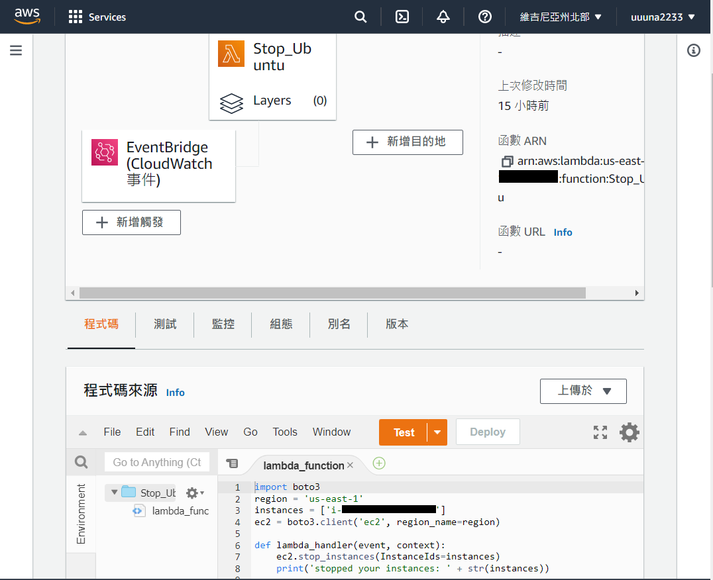
-
製作可視化分析報表
再將資料匯入 Tableau 前，需進行資料預處理，如：希望呈現不同技能點對應的職缺類型、數量和薪資
STEP1 拆分 skill 欄位，將不同技能分為多欄
STEP2 將欄索引旋轉為列索引，並置於列索引最內層
STEP3 不保留層級為 1 的索引，並加回原 Dataframe
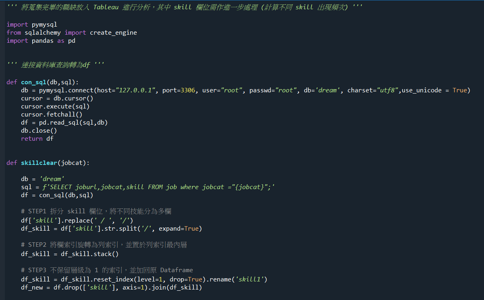 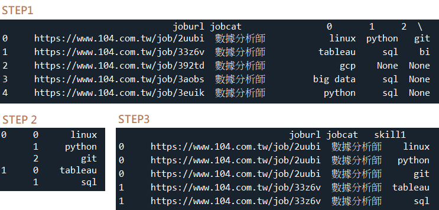
以 6/24 為基準，收集 30 日內大數據相關職缺，104 和 1111 人力銀行為職缺刊登大宗，且每日更新的職缺數超過 10,000 筆，顯示企業攬才動能高
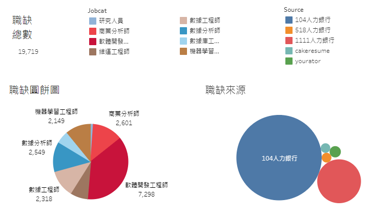
整體而言，職位要求技能前 5 名為 sql、python、linux、git、api，此為應扎好基本功的必備技能
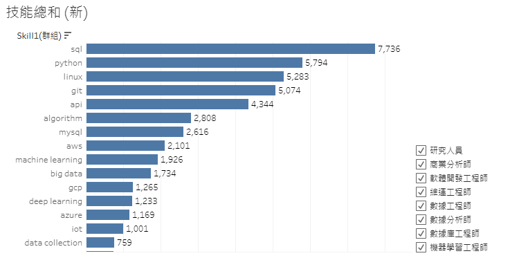
若求職者有意朝〔機器學習工程師〕目標邁進，則可參考以下技能需求持續精進
P.S. 此次分析因限定在養成班所學技能，所能呈現之技能、工具種類有限
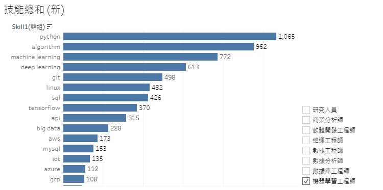
整體而言，職缺具有一定的薪資水準（月薪 40,000 元起）
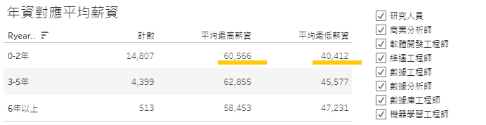
若單獨查看與養成班所學最密切相關的〔數據分析師〕&〔數據工程師〕職缺，其 0-2 年年資也有不錯的薪資行情
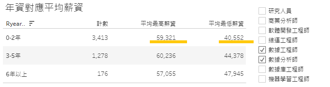
大數據領域發展日新月異，觀念、技術、算法快速迭代，隨時保持一顆探尋答案的好奇心，和市場演進與時俱進 ٩(^ᴗ^)۶
- 連結至 網頁儀表板 動態呈現分析結果
- 完整程式碼請至 Github